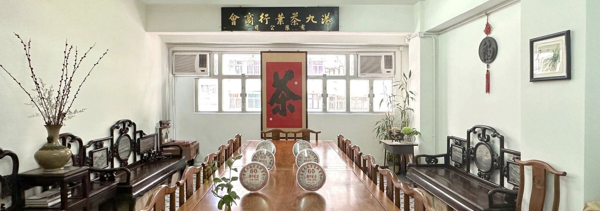

港九茶葉行商會
Hong Kong & Kowloon Tea Trade Merchants Association
1946 籌組 · 1948 正式成立
Hong Kong & Kowloon Tea Trade Merchants Association
1946 籌組 · 1948 正式成立

港九茶葉行商會是香港歷史上首個茶行業商會，會員涵蓋眾多著名茶葉商號及老字號企業。本會的核心宗旨，是向世界推廣中國茶文化。
 邁向八十周年
1948 — 2028
本會於 1946 年籌組、1948 年正式成立。2028 年，本會將迎來正式成立八十周年——點擊回顧本會歷程與里程碑。
本會歷史 →
邁向八十周年
1948 — 2028
本會於 1946 年籌組、1948 年正式成立。2028 年，本會將迎來正式成立八十周年——點擊回顧本會歷程與里程碑。
本會歷史 →